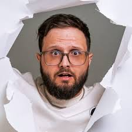

cap



Cap, cujo nome verdadeiro é Luciano Pamplona, também conhecido antigamente como Capuccino Mafioso, é um criador de conteúdo, YouTuber e streamer brasileiro, natural de Florianópolis. Ele iniciou sua trajetória na internet em 2012, com o canal Capuccino Mafioso, focado em jogos como GTA e FIFA, e hoje comanda o canal CapJoga, voltado principalmente para lives e gameplays variadas.
Com o canal Capuccino Mafioso, Cap alcançou grande popularidade fazendo montagens e vídeos de reações, acumulando milhões de visualizações ao longo dos anos. Posteriormente, migrou o foco de seu conteúdo para as lives, onde costuma jogar um pouco de tudo, além de trazer vlogs e dicas sobre jogos variados.
Atualmente, o CapJoga é seu canal principal, reunindo centenas de milhares de inscritos, enquanto o canal Capuccino Mafioso continua sendo uma marca importante de sua trajetória, com mais de um milhão de inscritos. Nas lives, Cap ficou bastante conhecido por participar da "Noitada com os Amigos", quadro presente nas transmissões do streamer Alanzoka.
Cap é um dos nomes de destaque entre os criadores de conteúdo catarinenses, reconhecido por sua longevidade na internet desde 2012. Sua trajetória, que começou com vídeos de reação e montagens, e evoluiu para lives variadas, mostra como é possível se reinventar e continuar relevante no cenário do streaming brasileiro ao longo de mais de uma década.